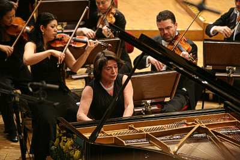

| |
|
|
|
XI Wielkanocny
Festiwal Beethovena w Warszawie - Beethoven i jego prauczeñ |
|
Do tradycji Wielkanocnego Festiwalu nale¿y
przypominanie kompozycji Patrona - zapomnianych lub nie znanych
szerszej publiczno¶ci. By tradycji tej uczyniæ zado¶æ, 30 marca
wieczorem wykonano w sali koncertowej FN muzykê, jak± do przedstawienia
teatralnego tragedii Egmont Goethego napisa³ Beethoven na prze³omie lat
1809 i 1810 (Breitkopf i Härtel wydali w tym samym roku partyturê
uwertury, grywanej i nagrywanej chêtnie i dzi¶, antrakty za¶ i muzykê
sceniczn± - dwa lata pó¼niej, jako opus 84 kompozytora). W Warszawie
dwie sopranowe Pie¶ni Klaruni wykona³a Susanne Bernhard, tekst czyta³
(po niemiecku!) Olgierd £ukaszewicz, za¶ orkiestrê Camerata Salzburg
prowadzi³a - zza pierwszego pulpitu - Natalie Chee, koncertmistrzyni
zespo³u.
|
S³uchacze znaj±cy
Uwerturê "Egmont" z licznych wykonañ i nagrañ mogli czuæ odrobinê
zawodu - Camerata Salzburg to nie Filharmonicy Berliñscy, orkiestra
Concertgebouw lub Chicagoska - nie powinni jednak narzekaæ na brak
uniesieñ i teatralnej wymowno¶ci w tej interpretacji. Wszelkie
w±tpliwo¶ci dotycz±ce sensu przedsiêwziêcia rozwia³a nastêpuj±ca po
Uwerturze pierwsza z Pie¶ni Klaruni: Susanne Bernhard nie do¶æ, ¿e
dysponuje piêknym i bardzo no¶nym g³osem (stoj±c w g³êbi estrady
trafnie ustali³a jego natê¿enie w stosunku do brzmienia orkiestry), nie
do¶æ, ¿e z ca³kowit± swobod± ¶piewa zarówno frazy liryczne, jak
fragmenty wymagaj±ce umiejêtno¶ci wirtuozowskich, to jeszcze umie
czytelnie przekazaæ tekst i "graæ" jego znaczeniem, znakomicie
odnalaz³a siê te¿ w trudnym, bo unikalnym, stylu Beethovenowskim. Rytmy
marszowe pierwszej Pie¶ni ("Piszcza³ki i bêbny! To pobudka gra!") by³y
znakomite!
Nie mniej wyrazi¶cie gra³ wszystkie powierzone mu role Olgierd
£ukaszewicz. Z zadziwiaj±c± swobod± modulowa³ g³os, podkre¶la³
pojedyncze s³owa, waha³ siê, gdzie trzeba, nie uciekaj±c siê przy tym
do znanej z historii XX wieku niemczyzny szczekliwej; w najlepszym
znaczeniu tego s³owa prezentowa³ wy¿yny kultury niemieckiej. I choæ
s³uchacze nie znaj±cy mowy naszych s±siadów mogli czuæ siê zagubieni
(polskie t³umaczenie mo¿na by³o znale¼æ w przera¼liwie ciê¿kim, wielkim
programie festiwalowym), ¶wietnie rozumia³a go orkiestra, piêknie
komentuj±c tekst, gdzie trzeba wchodz±c aktorowi w s³owo, gdzie trzeba
- wype³niaj±c pauzy tajemnicami. Natalie Chee pomaga³a kolegom gestem
dyskretnym, ale nadzwyczaj czytelnym; Camerata Salzburg okaza³a siê
jednorodnym instrumentem, bezb³êdnie przekazuj±cym emocje towarzysz±ce
¦mierci bohaterki oraz oddaj±ce charakter Melodramatu (snu skazanego na
¶mieæ Egmonta) i fina³owej Symfonii zwyciêstwa.
Przedstawienie Egmonta w tym wykonaniu to znakomity pomys³ programowy
XI Festiwalu (jego autorom nale¿± siê wyrazy uznania); a tradycja
przypominania dzie³ zapomnianych - je¶li nie zaniknie - mo¿e przynie¶æ
wiele podobnych rado¶ci w przysz³o¶ci.
| |
 |
|
| |
ELISABETH
LEONSKAJA i Camerata Salzburg, Fot. Bruno Fidrych |
|
Egmonta
poprzedzi³ w pierwszej czê¶ci wieczoru IV Koncert fortepianowy G-dur
Beethovena, którego partiê solow± bez pomocy dyrygenta wykona³a
Elisabeth Leonskaja. Ta sk±din±d bardzo interesuj±ca pianistka ma chyba
skromne do¶wiadczenie kapelmistrzowskie; ruchami g³owy - jednostajnymi
i ma³o energicznymi - nie zdo³a³a zast±piæ gestów wyra¿anych przez
dyrygenta rêk±, koncertmistrzyni Cameraty za¶ - chyba z nadmiaru
grzeczno¶ci - nie przejê³a inicjatywy nawet w orkiestrowych
ritornelach. St±d wydawa³o siê, ¿e interpretacja - drepcz±ca w miejscu,
akademicka, pozbawiona romantycznych uniesieñ, kontrastów i niuansów
agogicznych - wynik³a z uznania, ¿e sk³adno¶æ wykonania jest celem
nadrzêdnym. A szkoda, bo Koncerty Mendelssohna nagrane przez Leonsk± z
t± sam± orkiestr±, prowadzon± wszak¿e przez wielce utalentowanego Ilana
Volkova (p³yta wytwórni MDG recenzowana w nrze 2/2007), dowodz±
wielkiego talentu pianistki i sk³onno¶ci muzyków z Salzburga do gry z
werw±, wyrazistej i plastycznej.
Dla nielicznych muzyk± zapomnian±, dla wielu za¶ nieznan±, okaza³y siê
Lata pielgrzymstwa Liszta (praucznia Beethovena... przez Czernego)
wykonane 3 kwietnia. Choæ Mūza Rubackytė, pianistka z Litwy, pominê³a
trzeci utwór z Roku pierwszego (Szwajcaria) oraz drugi i trzeci z Roku
drugiego (W³ochy), nie siêgnê³a te¿ po suplementy, jej recital zaj±³
trzy prawie godzinne czê¶ci oddzielone d³ugimi przerwami, tak ¿e wracaæ
do domów trzeba by³o autobusami nocnymi. Publiczno¶æ nie wype³ni³a
szczelnie nawet parteru sali koncertowej Filharmonii Narodowej - co
zrozumia³e ze wzglêdu na charakter cyklu, intymny i subiektywnie
romantyczny niemal do przesady. Byæ mo¿e Studio im. Lutos³awskiego lub
sala Akademii Muzycznej by³aby lepszym miejscem dla tego niebywa³ego
koncertu.
Wyj±tkowego nie tylko z racji programu, ale te¿ jego wykonania.
Rubackytė - pianistka, która bez wahania mo¿e siêgaæ po najtrudniejsze
wirtuozowskie kompozycje Liszta - gra³a d¼wiêkiem urozmaiconym, bogatym
w odcienie, nigdy wszak¿e nie forsowanym. Po swojemu, acz przekonuj±co
³±czy³a romantyczne egzaltacje z konwencjonalnymi retorycznymi
zwrotami: pocz±tek Kaplicy Wilhelma Tella by³ prawdziwym triumfem, woda
w jeziorze chlupota³a o burtê ³odzi, patetyczne deklamacje Sonetów
Petrarki by³y "¶piewnymi recytatywami", a to, co Liszt napisa³ Po
lekturze Dantego - i fantazj±, i czytelnie domkniêt± sonat±. W utworach
sk³adaj±cych siê na Rok trzeci pianistka dostrzeg³a Liszta-nowatora,
prekursora dekadenckiej awangardy muzycznej. Piêknie zabrzmia³o
po³±czenie Trenu II z bryzgami wody Fontanny w Villa d'Este. Jak blisko
do Liszta by³o... Ravelowi!
| |
 |
|
| |
MUZA
RUBACKYTĖ, Fot. Bruno Fidrych |
|
Granie tak trudnej muzyki solowej w
wielkiej sali to sztuka nie lada. Muza Rubackytė zdo³a³a swymi
muzycznymi opowie¶ciami zafascynowaæ, je¶li nie wszystkich, to na pewno
wiêkszo¶æ s³uchaczy. Choæ - przyznajê - zawsze zadajê sobie pytanie, po
co Liszt pisa³ tê muzykê, to przecie¿ nie mia³em w±tpliwo¶ci, czemu
litewska pianistka j± gra: poszukiwa³a przyczyn, odnajdywa³a logiczne
zwi±zki, dzieli³a siê zachwytem, sk³adaj±c tym samym ho³d geniuszowi. A
¿e w Sursum corda zamykaj±cym Rok trzeci nasze serca nie tyle unios³y
siê, co zosta³y do niebios d¼wigniête, to nie jej wina, to kompozytor -
zafascynowany widaæ osi±gniêciami swojego stulecia - nie dostrzeg³ w
tym przypadku innej mo¿liwo¶ci, jak odwo³aæ siê do pomocy maszyny
parowej!
Warto by³o tyle godzin daæ siê prowadziæ do takiego celu. |
|
| KACPER MIKLASZEWSKI |
|
|
|
|